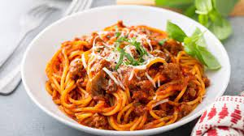

The Best Spaghetti Recipe Ever

Description
This is the best Spaghetti recipe that you will find on the internet.
This is going to be perfectly seasoned and cooked to perfection.
This spaghetti will guarentee your family will thank you for visiting this site.
Ingredents
- 1tsp. salt
- 1tsp. pepper
- 1tsp. garlic
- 1tbsp. itialian seasoning
- 1tbsp Basil
- 1/2tbsp butter
- Olive oil
- 8oz. pasta sauce
- 1lb. spaghetti
- 1lb. ground beef
Cooking Instructions
- Begin boiling 4 quarts of water in a large pot.
- Preheat a skillet over med-high heat and coat pan with olive oil.
- Once pan is hot, add ground beef and break into small chunks.
- Add salt, pepper, garlic and itialian seasoning to ground beef and mix.
- Cook ground beef until it reaches an internal temp of 165 degrees.
- Once water starts boiling, add pasta and cook until aldente (Approx. 8 min.).
- Once beef is cooked, add in pasta sauce and heat to desired temperature.
- Once pasta is cooked remove from stove and strain water using collender.
- Toss pasta in olive oil to keep it from sticking together.
- Once pasta sauce is warm, combine pasta and meat sauce and mix.
- Plate pasta and garnish with parmasean and fresh cut basil.
- ENJOY!